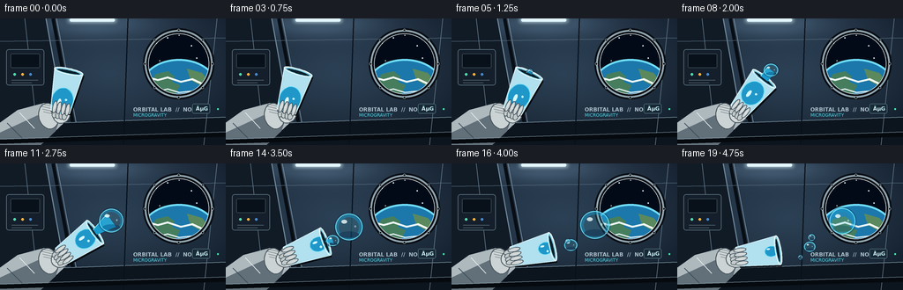
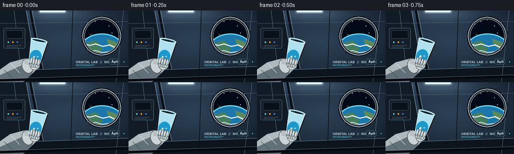
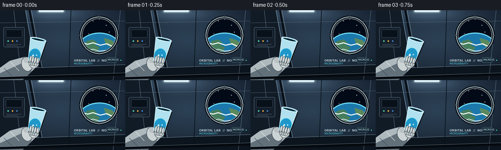

CODING AGENTS AS PIXEL WORLD MODELS
traex/GPT-5.6-Sol · phygen_001
点击播放 · 原生 RGB 像素
逐轮保存的候选
回放视频、检查图与代码变化。
每份候选均可单独播放。实际图片检查记录在下方工具轨迹中。
候选 01播放与检查图
点击播放 · 原生 RGB 像素


展开代码变化
--- 上一保存版本
+++ 本次保存版本
@@ -0,0 +1,261 @@
+from pathlib import Path
+import json, math
+import numpy as np
+from PIL import Image, ImageDraw, ImageFont, ImageFilter
+import artifact_io
+
+CASE = Path(__file__).resolve().parent
+SPEC = json.loads((CASE / 'task_spec.json').read_text())
+W, H, N = SPEC['width'], SPEC['height'], SPEC['frames']
+S = 4
+rng = np.random.default_rng(31)
+
+try:
+ FONT = ImageFont.truetype('/usr/share/fonts/truetype/dejavu/DejaVuSans.ttf', 5*S)
+ FONT_B = ImageFont.truetype('/usr/share/fonts/truetype/dejavu/DejaVuSans-Bold.ttf', 6*S)
+except Exception:
+ FONT = FONT_B = ImageFont.load_default()
+
+def sc(v): return int(round(v*S))
+def pt(p): return (sc(p[0]), sc(p[1]))
+def box(b): return tuple(sc(x) for x in b)
+def polygon(draw, points, **kw): draw.polygon([pt(x) for x in points], **kw)
+def line(draw, points, fill, width=1, joint='curve'): draw.line([pt(x) for x in points], fill=fill, width=max(1,sc(width)), joint=joint)
+def ellipse(draw, b, **kw): draw.ellipse(box(b), **kw)
+def rounded(draw, b, r, **kw): draw.rounded_rectangle(box(b), radius=sc(r), **kw)
+def smooth(x):
+ x=max(0.0,min(1.0,x)); return x*x*(3-2*x)
+def clamp(x): return max(0.0,min(1.0,x))
+def vec_add(a,b): return (a[0]+b[0], a[1]+b[1])
+def vec_mul(a,k): return (a[0]*k,a[1]*k)
+
+def oriented_ellipse(draw, center, u, a, b, fill, outline=None, width=1, steps=48):
+ q=(-u[1],u[0]); points=[]
+ for i in range(steps):
+ z=2*math.pi*i/steps
+ points.append((center[0]+u[0]*a*math.cos(z)+q[0]*b*math.sin(z),
+ center[1]+u[1]*a*math.cos(z)+q[1]*b*math.sin(z)))
+ polygon(draw, points, fill=fill)
+ if outline: line(draw, points+[points[0]], outline, width)
+
+def make_background(frame):
+ # Cool metallic orbital module, softly lit from overhead.
+ yy, xx = np.mgrid[0:H*S, 0:W*S]
+ x=xx/S; y=yy/S
+ radial=np.sqrt(((x-126)/175)**2+((y-63)/103)**2)
+ base=np.zeros((H*S,W*S,3),dtype=np.float32)
+ base[:,:,0]=23+17*(1-radial)+8*(1-y/H)
+ base[:,:,1]=35+25*(1-radial)+9*(1-y/H)
+ base[:,:,2]=48+31*(1-radial)+12*(1-y/H)
+ # Pools of overhead light and a lower vignette.
+ lamp=np.exp(-((x-105)**2/4200+(y-5)**2/240))
+ base += lamp[:,:,None]*np.array([33,42,47])
+ vign=np.clip(((x-W/2)/(W*.72))**2+((y-H/2)/(H*.9))**2,0,1)
+ base-=vign[:,:,None]*np.array([11,13,14])
+ noise=rng.normal(0,.8,(H*S,W*S,1))
+ base=np.clip(base+noise,0,255).astype(np.uint8)
+ im=Image.fromarray(base,'RGB').convert('RGBA'); d=ImageDraw.Draw(im,'RGBA')
+
+ # Long perspective ribs and inset equipment bays.
+ polygon(d, [(0,0),(52,0),(78,144),(0,144)], fill=(17,27,38,115))
+ line(d, [(52,0),(78,144)], (111,137,154,130), 1.2)
+ line(d, [(60,0),(87,144)], (8,14,21,150), 4)
+ line(d, [(64,0),(91,144)], (129,150,163,100), .7)
+ polygon(d, [(0,121),(256,112),(256,144),(0,144)], fill=(12,20,29,150))
+ line(d, [(0,121),(256,112)], (111,133,147,110), 1)
+ # Ceiling panel seams.
+ line(d, [(0,26),(256,22)], (92,116,133,100), .8)
+ line(d, [(28,0),(44,144)], (94,117,132,80), .7)
+ line(d, [(145,0),(140,144)], (8,17,25,110), 1.2)
+ line(d, [(246,0),(231,144)], (95,117,132,80), .8)
+ # Equipment panels on far wall.
+ rounded(d,(7,35,50,76),3,fill=(20,31,43,220),outline=(92,115,130,120),width=sc(.7))
+ rounded(d,(12,40,45,56),1.5,fill=(8,17,26,220),outline=(77,99,113,130),width=sc(.5))
+ for i,c in enumerate([(78,222,176,230),(255,181,63,235),(71,138,214,220)]):
+ ellipse(d,(15+i*9,62,18+i*9,65),fill=c)
+ line(d,[(13,70),(43,70)],(113,131,142,120),.5)
+ line(d,[(13,73),(36,73)],(113,131,142,90),.5)
+
+ # Overhead fluorescent strips.
+ glow=Image.new('RGBA',im.size,(0,0,0,0)); gd=ImageDraw.Draw(glow,'RGBA')
+ rounded(gd,(74,-1,135,7),3,fill=(184,227,242,55))
+ rounded(gd,(78,0,131,4.5),2,fill=(228,248,255,210))
+ glow=glow.filter(ImageFilter.GaussianBlur(sc(2.5)))
+ im=Image.alpha_composite(im,glow); d=ImageDraw.Draw(im,'RGBA')
+ rounded(d,(79,0,130,3.5),1.5,fill=(225,245,251,205))
+
+ # Porthole with stars and a curved Earth limb.
+ window=Image.new('RGBA',im.size,(0,0,0,0)); wd=ImageDraw.Draw(window,'RGBA')
+ ellipse(wd,(166,15,239,88),fill=(3,10,23,255))
+ stars=[(177,28,1),(190,22,.7),(217,31,.8),(229,23,.55),(181,48,.55),(223,45,.7),(203,19,.5)]
+ for sx,sy,sr in stars: ellipse(wd,(sx-sr,sy-sr,sx+sr,sy+sr),fill=(220,239,255,220))
+ # Earth fills the lower portion: ocean, atmosphere, land, clouds.
+ ellipse(wd,(160,48,246,112),fill=(28,120,171,255))
+ ellipse(wd,(159,46,247,111),outline=(111,220,250,235),width=sc(2.2))
+ polygon(wd,[(169,74),(177,63),(190,60),(198,66),(195,72),(204,76),(198,87),(181,89)],fill=(70,126,93,210))
+ polygon(wd,[(212,57),(229,62),(238,73),(229,77),(216,70)],fill=(91,137,93,185))
+ line(wd,[(164,66),(179,70),(190,67),(205,72),(218,69),(237,78)],(239,249,247,205),2.2)
+ line(wd,[(174,84),(190,80),(203,84),(221,82),(240,89)],(233,245,246,180),1.5)
+ # Restrict all scene content to circular aperture.
+ mask=Image.new('L',im.size,0); md=ImageDraw.Draw(mask); md.ellipse(box((166,15,239,88)),fill=255)
+ window.putalpha(mask); im=Image.alpha_composite(im,window); d=ImageDraw.Draw(im,'RGBA')
+ ellipse(d,(162,11,243,92),outline=(8,14,20,230),width=sc(6))
+ ellipse(d,(164,13,241,90),outline=(145,166,177,220),width=sc(2))
+ ellipse(d,(168,17,237,86),outline=(205,220,226,100),width=sc(.7))
+ for a in range(0,360,45):
+ cx=202.5+38.4*math.cos(math.radians(a)); cy=51.5+38.4*math.sin(math.radians(a))
+ ellipse(d,(cx-1.4,cy-1.4,cx+1.4,cy+1.4),fill=(9,15,21,255),outline=(184,196,202,180),width=sc(.45))
+
+ # Lab markings make the setting read immediately.
+ d.text(pt((151,100)),'ORBITAL LAB // NODE 2',font=FONT_B,fill=(169,190,201,170))
+ d.text(pt((151,107)),'MICROGRAVITY',font=FONT,fill=(83,213,230,210))
+ rounded(d,(218,97,238,108),2,fill=(24,42,54,190),outline=(101,135,150,130),width=sc(.6))
+ d.text(pt((222,99)),'µG',font=FONT_B,fill=(199,238,244,230))
+ # small fixed LEDs
+ ellipse(d,(246,102,248,104),fill=(63,242,178,210))
+ return im
+
+def draw_arm(im, base, u, frame):
+ d=ImageDraw.Draw(im,'RGBA')
+ # Sleeve enters from lower-left behind the hand.
+ polygon(d,[(-8,144),(-5,122),(20,104),(50,96),(68,103),(72,119),(51,139)],fill=(174,185,190,255))
+ polygon(d,[(-8,144),(-5,132),(47,108),(69,110),(63,128),(46,144)],fill=(98,112,122,190))
+ line(d,[(8,119),(25,136)],(61,76,87,160),1.2)
+ line(d,[(22,107),(39,125)],(224,231,232,130),1)
+ # Ribbed cuff.
+ oriented_ellipse(d,(55,111),(0.97,-.23),11,15,(204,211,212,255),(71,84,93,220),1)
+ for k in [-5,-2,1,4]: line(d,[(48+k*.3,102+k),(65+k*.3,106+k)],(104,117,124,130),.8)
+ # Palm centered on the cup's closed base.
+ q=(-u[1],u[0])
+ palm=vec_add(base,vec_add(vec_mul(u,-1),vec_mul(q,2)))
+ oriented_ellipse(d,palm,u,12,10,(212,218,218,255),(74,89,98,230),1.1)
+ # Thumb above rim-side of base.
+ thumb_c=vec_add(base,vec_add(vec_mul(u,5),vec_mul(q,-7)))
+ oriented_ellipse(d,thumb_c,u,9,4.2,(224,229,228,255),(73,87,96,210),.9)
+ line(d,[vec_add(thumb_c,vec_mul(u,-4)),vec_add(thumb_c,vec_mul(u,4))],(245,248,245,120),.7)
+ # Knuckle pads.
+ for k in [-5.5,-1.5,2.5,6.0]:
+ c=vec_add(base,vec_add(vec_mul(u,-3.5),vec_mul(q,k)))
+ oriented_ellipse(d,c,u,4.8,2.8,(194,202,203,255),(66,82,91,190),.65)
+
+def draw_cup_and_inside(im, base, u, t):
+ d=ImageDraw.Draw(im,'RGBA'); q=(-u[1],u[0]); L=47
+ mouth=vec_add(base,vec_mul(u,L))
+ corners=[vec_add(mouth,vec_mul(q,-16.5)),vec_add(mouth,vec_mul(q,16.5)),
+ vec_add(base,vec_mul(q,11)),vec_add(base,vec_mul(q,-11))]
+ # Glass shadow and transparent body.
+ polygon(d,[vec_add(x,(1.5,2)) for x in corners],fill=(0,8,15,80))
+ polygon(d,corners,fill=(177,224,239,35))
+ # Cohesive water mass migrates toward the opening and diminishes as it exits.
+ shift=13+26*smooth(clamp((t-.05)/.74))
+ remain=1-smooth(clamp((t-.34)/.66))*.58
+ wc=vec_add(base,vec_mul(u,shift))
+ oriented_ellipse(d,wc,u,12.5*remain+2.0,10.7*remain+1.5,(32,151,201,175),(89,222,249,210),.8)
+ # interior caustic and bubble
+ hi=vec_add(wc,vec_add(vec_mul(u,-3),vec_mul(q,-3)))
+ oriented_ellipse(d,hi,u,4.5*remain,2.0*remain,(214,249,255,120))
+ if remain>.5:
+ bc=vec_add(wc,vec_add(vec_mul(u,1.5),vec_mul(q,3.8)))
+ ellipse(d,(bc[0]-1.2,bc[1]-1.2,bc[0]+1.2,bc[1]+1.2),fill=(172,237,250,100),outline=(222,253,255,150),width=sc(.4))
+ # Glass edges and base.
+ line(d,[corners[0],corners[3],corners[2],corners[1]],(208,238,246,190),1)
+ line(d,[corners[3],corners[2]],(235,247,250,170),1.5)
+ # Elliptical lip (minor axis follows cup axis).
+ oriented_ellipse(d,mouth,q,16.5,3.2,(153,211,229,30),(232,250,255,225),1.2)
+ inner_mouth=vec_add(mouth,vec_mul(u,-.5))
+ oriented_ellipse(d,inner_mouth,q,13.8,1.9,(9,32,43,55),(104,190,217,150),.7)
+ return mouth
+
+def water_globule(im, center, r, phase=0, alpha=225, stretched=(1.0,1.0)):
+ # Layered transparent sphere: dark refractive edge, cyan body, specular crescents.
+ layer=Image.new('RGBA',im.size,(0,0,0,0)); d=ImageDraw.Draw(layer,'RGBA')
+ rx=r*stretched[0]; ry=r*stretched[1]
+ ellipse(d,(center[0]-rx-1.4,center[1]-ry-1.4,center[0]+rx+1.4,center[1]+ry+1.4),fill=(2,44,73,70))
+ ellipse(d,(center[0]-rx,center[1]-ry,center[0]+rx,center[1]+ry),fill=(28,160,210,int(alpha*.58)),outline=(112,231,250,alpha),width=max(1,sc(.9)))
+ ellipse(d,(center[0]-rx*.76,center[1]-ry*.72,center[0]+rx*.73,center[1]+ry*.78),fill=(78,190,221,int(alpha*.20)))
+ # dark lower refraction crescent
+ ellipse(d,(center[0]-rx*.72,center[1]+ry*.34,center[0]+rx*.72,center[1]+ry*.82),fill=(9,84,130,75))
+ # sharp overhead highlights
+ hx=center[0]-rx*.34; hy=center[1]-ry*.38
+ ellipse(d,(hx-r*.22,hy-r*.15,hx+r*.20,hy+r*.12),fill=(231,253,255,210))
+ ellipse(d,(center[0]+rx*.39,center[1]-ry*.12,center[0]+rx*.52,center[1]+ry*.05),fill=(205,249,255,135))
+ im.alpha_composite(layer)
+
+def draw_external_water(im, mouth, u, t, frame):
+ pour=clamp((t-.20)/.80)
+ if pour<=0: return
+ d=ImageDraw.Draw(im,'RGBA'); q=(-u[1],u[0])
+ # Main body attached to the lip, then released into a free surface-tension sphere.
+ split=.58
+ if pour<=split:
+ s=smooth(pour/split)
+ dist=2+23*s
+ r=1.5+13.2*s
+ center=vec_add(mouth,vec_mul(u,dist))
+ # Neck follows the changing lip and pinches before release.
+ neck=1.2+3.8*math.sin(math.pi*pour/split)**.8
+ a=vec_add(mouth,vec_mul(q,-neck)); b=vec_add(mouth,vec_mul(q,neck))
+ c=vec_add(center,vec_mul(q,r*.66)); e=vec_add(center,vec_mul(q,-r*.66))
+ polygon(d,[a,e,c,b],fill=(27,153,204,155))
+ line(d,[a,e],(117,231,248,160),.65)
+ water_globule(im,center,r,frame,225,(1.0+0.12*(1-s),.88+0.12*s))
+ else:
+ # Compute the release location from the cup pose at release time.
+ tr=.20+.80*split
+ ang=math.radians(-78+69*smooth(tr))
+ ur=(math.cos(ang),math.sin(ang)); br=(68+1.2*math.sin(tr*math.pi),106-.7*math.sin(tr*math.pi))
+ mr=vec_add(br,vec_mul(ur,47)); start=vec_add(mr,vec_mul(ur,25))
+ z=smooth((pour-split)/(1-split))
+ center=(start[0]+54*z, start[1]-7*z+1.0*math.sin(z*math.pi))
+ water_globule(im,center,14.7+1.1*math.sin(z*math.pi),frame,235,(1.0+0.05*math.sin(z*math.pi),1.0))
+ # Pinching remnant at the rim retreats into its own floating bead.
+ p2=clamp((pour-split)/(.42))
+ c2=vec_add(mouth,vec_mul(u,4+22*smooth(p2)))
+ c2=(c2[0]+10*p2,c2[1]+2*math.sin(p2*math.pi))
+ r2=5.9+1.0*math.sin(math.pi*p2)
+ if p2<.22:
+ w=2.4*(1-p2/.22)+.8
+ polygon(d,[vec_add(mouth,vec_mul(q,-w)),vec_add(c2,vec_mul(q,-r2*.6)),
+ vec_add(c2,vec_mul(q,r2*.6)),vec_add(mouth,vec_mul(q,w))],fill=(27,155,205,145))
+ water_globule(im,c2,r2,frame+3,220,(1.08,.94))
+ # Tiny satellite droplets appear late, all drifting outwardânot falling.
+ if pour>.70:
+ z=smooth((pour-.70)/.30)
+ c=(mouth[0]+u[0]*10+28*z, mouth[1]+u[1]*10-13*z)
+ water_globule(im,c,2.2+1.5*z,frame+7,210)
+ if pour>.84:
+ z=smooth((pour-.84)/.16)
+ c=(mouth[0]+u[0]*7+18*z, mouth[1]+u[1]*7+9*z)
+ water_globule(im,c,1.4+1.0*z,frame+11,195)
+
+def draw_foreground_details(im, base, u):
+ # Gloved fingertips cross in front of the glass to sell the grip.
+ d=ImageDraw.Draw(im,'RGBA'); q=(-u[1],u[0])
+ for k in [-7,-2,3,8]:
+ c=vec_add(base,vec_add(vec_mul(u,4.0),vec_mul(q,k)))
+ oriented_ellipse(d,c,u,7.0,2.3,(205,212,212,250),(68,82,91,200),.65)
+ line(d,[vec_add(c,vec_mul(u,-2)),vec_add(c,vec_mul(u,3.5))],(241,244,241,100),.55)
+
+frames=[]
+for f in range(N):
+ t=f/(N-1)
+ im=make_background(f)
+ # A very subtle camera float is represented by hand bob only; the station remains stable.
+ a=math.radians(-78+69*smooth(t))
+ u=(math.cos(a),math.sin(a))
+ base=(68+1.2*math.sin(t*math.pi),106-.7*math.sin(t*math.pi))
+ draw_arm(im,base,u,f)
+ mouth=draw_cup_and_inside(im,base,u,t)
+ draw_external_water(im,mouth,u,t,f)
+ draw_foreground_details(im,base,u)
+ # Lower instrument rail gives depth and cinematic framing.
+ d=ImageDraw.Draw(im,'RGBA')
+ line(d,[(0,140),(256,132)],(5,10,15,180),5)
+ line(d,[(0,137),(256,129)],(124,144,154,90),.7)
+ # Downsample antialiased supersampled render.
+ im=im.convert('RGB').resize((W,H),Image.Resampling.LANCZOS)
+ frames.append(np.asarray(im,dtype=np.uint8))
+
+frames=np.stack(frames)
+artifact_io.save(frames,CASE)
+print('saved',frames.shape,frames.dtype,'range',int(frames.min()),int(frames.max()))
候选 02播放与检查图
点击播放 · 原生 RGB 像素

展开代码变化
--- 上一保存版本
+++ 本次保存版本
@@ -9,6 +9,7 @@
W, H, N = SPEC['width'], SPEC['height'], SPEC['frames']
S = 4
rng = np.random.default_rng(31)
+STATIC_NOISE = rng.normal(0, .8, (H*S, W*S, 1))
try:
FONT = ImageFont.truetype('/usr/share/fonts/truetype/dejavu/DejaVuSans.ttf', 5*S)
@@ -52,8 +53,7 @@
base += lamp[:,:,None]*np.array([33,42,47])
vign=np.clip(((x-W/2)/(W*.72))**2+((y-H/2)/(H*.9))**2,0,1)
base-=vign[:,:,None]*np.array([11,13,14])
- noise=rng.normal(0,.8,(H*S,W*S,1))
- base=np.clip(base+noise,0,255).astype(np.uint8)
+ base=np.clip(base+STATIC_NOISE,0,255).astype(np.uint8)
im=Image.fromarray(base,'RGB').convert('RGBA'); d=ImageDraw.Draw(im,'RGBA')
# Long perspective ribs and inset equipment bays.
@@ -110,7 +110,7 @@
d.text(pt((151,100)),'ORBITAL LAB // NODE 2',font=FONT_B,fill=(169,190,201,170))
d.text(pt((151,107)),'MICROGRAVITY',font=FONT,fill=(83,213,230,210))
rounded(d,(218,97,238,108),2,fill=(24,42,54,190),outline=(101,135,150,130),width=sc(.6))
- d.text(pt((222,99)),'µG',font=FONT_B,fill=(199,238,244,230))
+ d.text(pt((220,99)),'MICRO-G',font=FONT,fill=(199,238,244,230))
# small fixed LEDs
ellipse(d,(246,102,248,104),fill=(63,242,178,210))
return im
可观测工具轨迹
实际执行的命令与返回图片。
命令 1exit 0
/bin/bash -lc "cat prompt.txt && printf '\\n--- GENERATION_RULES.md ---\\n' && cat GENERATION_RULES.md"
命令 2exit 0
/bin/bash -lc "cat task_spec.json && printf '\\n--- files ---\\n' && find . -maxdepth 2 -type f -printf '%p\\n' | sort"
命令 3exit 0
/bin/bash -lc "which ffmpeg || true; which python3 || true; python3 - <<'PY' mods=['numpy','PIL','cv2','imageio','moviepy','scipy'] for m in mods: try: x=__import__(m); print(m,'OK',getattr(x,'__version__','')) except Exception as e: print(m,'NO',e) PY"
命令 4exit 0
/bin/bash -lc 'cat artifact_io.py'
命令 5exit 0
/bin/bash -lc "cat > generate.py <<'PY'
from pathlib import Path
import json, math
import numpy as np
from PIL import Image, ImageDraw, ImageFont, ImageFilter
import artifact_io
CASE = Path(__file__).resolve().parent
SPEC = json.loads((CASE / 'task_spec.json').read_text())
W, H, N = SPEC['width'], SPEC['height'], SPEC['frames']
S = 4
rng = np.random.default_rng(31)
try:
FONT = ImageFont.truetype('/usr/share/fonts/truetype/dejavu/DejaVuSans.ttf', 5*S)
FONT_B = ImageFont.truetype('/usr/share/fonts/truetype/dejavu/DejaVuSans-Bold.ttf', 6*S)
except Exception:
FONT = FONT_B = ImageFont.load_default()
def sc(v): return int(round(v*S))
def pt(p): return (sc(p[0]), sc(p[1]))
def box(b): return tuple(sc(x) for x in b)
def polygon(draw, points, **kw): draw.polygon([pt(x) for x in points], **kw)
def line(draw, points, fill, width=1, joint='curve'): draw.line([pt(x) for x in points], fill=fill, width=max(1,sc(width)), joint=joint)
def ellipse(draw, b, **kw): draw.ellipse(box(b), **kw)
def rounded(draw, b, r, **kw): draw.rounded_rectangle(box(b), radius=sc(r), **kw)
def smooth(x):
x=max(0.0,min(1.0,x)); return x*x*(3-2*x)
def clamp(x): return max(0.0,min(1.0,x))
def vec_add(a,b): return (a[0]+b[0], a[1]+b[1])
def vec_mul(a,k): return (a[0]*k,a[1]*k)
def oriented_ellipse(draw, center, u, a, b, fill, outline=None, width=1, steps=48):
q=(-u[1],u[0]); points=[]
for i in range(steps):
z=2*math.pi*i/steps
points.append((center[0]+u[0]*a*math.cos(z)+q[0]*b*math.sin(z),
center[1]+u[1]*a*math.cos(z)+q[1]*b*math.sin(z)))
polygon(draw, points, fill=fill)
if outline: line(draw, points+[points[0]], outline, width)
def make_background(frame):
# Cool metallic orbital module, softly lit from overhead.
yy, xx = np.mgrid[0:H*S, 0:W*S]
x=xx/S; y=yy/S
radial=np.sqrt(((x-126)/175)**2+((y-63)/103)**2)
base=np.zeros((H*S,W*S,3),dtype=np.float32)
base[:,:,0]=23+17*(1-radial)+8*(1-y/H)
base[:,:,1]=35+25*(1-radial)+9*(1-y/H)
base[:,:,2]=48+31*(1-radial)+12*(1-y/H)
# Pools of overhead light and a lower vignette.
lamp=np.exp(-((x-105)**2/4200+(y-5)**2/240))
base += lamp[:,:,None]*np.array([33,42,47])
vign=np.clip(((x-W/2)/(W*.72))**2+((y-H/2)/(H*.9))**2,0,1)
base-=vign[:,:,None]*np.array([11,13,14])
noise=rng.normal(0,.8,(H*S,W*S,1))
base=np.clip(base+noise,0,255).astype(np.uint8)
im=Image.fromarray(base,'RGB').convert('RGBA'); d=ImageDraw.Draw(im,'RGBA')
# Long perspective ribs and inset equipment bays.
polygon(d, [(0,0),(52,0),(78,144),(0,144)], fill=(17,27,38,115))
line(d, [(52,0),(78,144)], (111,137,154,130), 1.2)
line(d, [(60,0),(87,144)], (8,14,21,150), 4)
line(d, [(64,0),(91,144)], (129,150,163,100), .7)
polygon(d, [(0,121),(256,112),(256,144),(0,144)], fill=(12,20,29,150))
line(d, [(0,121),(256,112)], (111,133,147,110), 1)
# Ceiling panel seams.
line(d, [(0,26),(256,22)], (92,116,133,100), .8)
line(d, [(28,0),(44,144)], (94,117,132,80), .7)
line(d, [(145,0),(140,144)], (8,17,25,110), 1.2)
line(d, [(246,0),(231,144)], (95,117,132,80), .8)
# Equipment panels on far wall.
rounded(d,(7,35,50,76),3,fill=(20,31,43,220),outline=(92,115,130,120),width=sc(.7))
rounded(d,(12,40,45,56),1.5,fill=(8,17,26,220),outline=(77,99,113,130),width=sc(.5))
for i,c in enumerate([(78,222,176,230),(255,181,63,235),(71,138,214,220)]):
ellipse(d,(15+i*9,62,18+i*9,65),fill=c)
line(d,[(13,70),(43,70)],(113,131,142,120),.5)
line(d,[(13,73),(36,73)],(113,131,142,90),.5)
# Overhead fluorescent strips.
glow=Image.new('RGBA',im.size,(0,0,0,0)); gd=ImageDraw.Draw(glow,'RGBA')
rounded(gd,(74,-1,135,7),3,fill=(184,227,242,55))
rounded(gd,(78,0,131,4.5),2,fill=(228,248,255,210))
glow=glow.filter(ImageFilter.GaussianBlur(sc(2.5)))
im=Image.alpha_composite(im,glow); d=ImageDraw.Draw(im,'RGBA')
rounded(d,(79,0,130,3.5),1.5,fill=(225,245,251,205))
# Porthole with stars and a curved Earth limb.
window=Image.new('RGBA',im.size,(0,0,0,0)); wd=ImageDraw.Draw(window,'RGBA')
ellipse(wd,(166,15,239,88),fill=(3,10,23,255))
stars=[(177,28,1),(190,22,.7),(217,31,.8),(229,23,.55),(181,48,.55),(223,45,.7),(203,19,.5)]
for sx,sy,sr in stars: ellipse(wd,(sx-sr,sy-sr,sx+sr,sy+sr),fill=(220,239,255,220))
# Earth fills the lower portion: ocean, atmosphere, land, clouds.
ellipse(wd,(160,48,246,112),fill=(28,120,171,255))
ellipse(wd,(159,46,247,111),outline=(111,220,250,235),width=sc(2.2))
polygon(wd,[(169,74),(177,63),(190,60),(198,66),(195,72),(204,76),(198,87),(181,89)],fill=(70,126,93,210))
polygon(wd,[(212,57),(229,62),(238,73),(229,77),(216,70)],fill=(91,137,93,185))
line(wd,[(164,66),(179,70),(190,67),(205,72),(218,69),(237,78)],(239,249,247,205),2.2)
line(wd,[(174,84),(190,80),(203,84),(221,82),(240,89)],(233,245,246,180),1.5)
# Restrict all scene content to circular aperture.
mask=Image.new('L',im.size,0); md=ImageDraw.Draw(mask); md.ellipse(box((166,15,239,88)),fill=255)
window.putalpha(mask); im=Image.alpha_composite(im,window); d=ImageDraw.Draw(im,'RGBA')
ellipse(d,(162,11,243,92),outline=(8,14,20,230),width=sc(6))
ellipse(d,(164,13,241,90),outline=(145,166,177,220),width=sc(2))
ellipse(d,(168,17,237,86),outline=(205,220,226,100),width=sc(.7))
for a in range(0,360,45):
cx=202.5+38.4*math.cos(math.radians(a)); cy=51.5+38.4*math.sin(math.radians(a))
ellipse(d,(cx-1.4,cy-1.4,cx+1.4,cy+1.4),fill=(9,15,21,255),outline=(184,196,202,180),width=sc(.45))
# Lab markings make the setting read immediately.
d.text(pt((151,100)),'ORBITAL LAB // NODE 2',font=FONT_B,fill=(169,190,201,170))
d.text(pt((151,107)),'MICROGRAVITY',font=FONT,fill=(83,213,230,210))
rounded(d,(218,97,238,108),2,fill=(24,42,54,190),outline=(101,135,150,130),width=sc(.6))
d.text(pt((222,99)),'µG',font=FONT_B,fill=(199,238,244,230))
# small fixed LEDs
ellipse(d,(246,102,248,104),fill=(63,242,178,210))
return im
def draw_arm(im, base, u, frame):
d=ImageDraw.Draw(im,'RGBA')
# Sleeve enters from lower-left behind the hand.
polygon(d,[(-8,144),(-5,122),(20,104),(50,96),(68,103),(72,119),(51,139)],fill=(174,185,190,255))
polygon(d,[(-8,144),(-5,132),(47,108),(69,110),(63,128),(46,144)],fill=(98,112,122,190))
line(d,[(8,119),(25,136)],(61,76,87,160),1.2)
line(d,[(22,107),(39,125)],(224,231,232,130),1)
# Ribbed cuff.
oriented_ellipse(d,(55,111),(0.97,-.23),11,15,(204,211,212,255),(71,84,93,220),1)
for k in [-5,-2,1,4]: line(d,[(48+k*.3,102+k),(65+k*.3,106+k)],(104,117,124,130),.8)
# Palm centered on the cup's closed base.
q=(-u[1],u[0])
palm=vec_add(base,vec_add(vec_mul(u,-1),vec_mul(q,2)))
oriented_ellipse(d,palm,u,12,10,(212,218,218,255),(74,89,98,230),1.1)
# Thumb above rim-side of base.
thumb_c=vec_add(base,vec_add(vec_mul(u,5),vec_mul(q,-7)))
oriented_ellipse(d,thumb_c,u,9,4.2,(224,229,228,255),(73,87,96,210),.9)
line(d,[vec_add(thumb_c,vec_mul(u,-4)),vec_add(thumb_c,vec_mul(u,4))],(245,248,245,120),.7)
# Knuckle pads.
for k in [-5.5,-1.5,2.5,6.0]:
c=vec_add(base,vec_add(vec_mul(u,-3.5),vec_mul(q,k)))
oriented_ellipse(d,c,u,4.8,2.8,(194,202,203,255),(66,82,91,190),.65)
def draw_cup_and_inside(im, base, u, t):
d=ImageDraw.Draw(im,'RGBA'); q=(-u[1],u[0]); L=47
mouth=vec_add(base,vec_mul(u,L))
corners=[vec_add(mouth,vec_mul(q,-16.5)),vec_add(mouth,vec_mul(q,16.5)),
vec_add(base,vec_mul(q,11)),vec_add(base,vec_mul(q,-11))]
# Glass shadow and transparent body.
polygon(d,[vec_add(x,(1.5,2)) for x in corners],fill=(0,8,15,80))
polygon(d,corners,fill=(177,224,239,35))
# Cohesive water mass migrates toward the opening and diminishes as it exits.
shift=13+26*smooth(clamp((t-.05)/.74))
remain=1-smooth(clamp((t-.34)/.66))*.58
wc=vec_add(base,vec_mul(u,shift))
oriented_ellipse(d,wc,u,12.5*remain+2.0,10.7*remain+1.5,(32,151,201,175),(89,222,249,210),.8)
# interior caustic and bubble
hi=vec_add(wc,vec_add(vec_mul(u,-3),vec_mul(q,-3)))
oriented_ellipse(d,hi,u,4.5*remain,2.0*remain,(214,249,255,120))
if remain>.5:
bc=vec_add(wc,vec_add(vec_mul(u,1.5),vec_mul(q,3.8)))
ellipse(d,(bc[0]-1.2,bc[1]-1.2,bc[0]+1.2,bc[1]+1.2),fill=(172,237,250,100),outline=(222,253,255,150),width=sc(.4))
# Glass edges and base.
line(d,[corners[0],corners[3],corners[2],corners[1]],(208,238,246,190),1)
line(d,[corners[3],corners[2]],(235,247,250,170),1.5)
# Elliptical lip (minor axis follows cup axis).
oriented_ellipse(d,mouth,q,16.5,3.2,(153,211,229,30),(232,250,255,225),1.2)
inner_mouth=vec_add(mouth,vec_mul(u,-.5))
oriented_ellipse(d,inner_mouth,q,13.8,1.9,(9,32,43,55),(104,190,217,150),.7)
return mouth
def water_globule(im, center, r, phase=0, alpha=225, stretched=(1.0,1.0)):
# Layered transparent sphere: dark refractive edge, cyan body, specular crescents.
layer=Image.new('RGBA',im.size,(0,0,0,0)); d=ImageDraw.Draw(layer,'RGBA')
rx=r*stretched[0]; ry=r*stretched[1]
ellipse(d,(center[0]-rx-1.4,center[1]-ry-1.4,center[0]+rx+1.4,center[1]+ry+1.4),fill=(2,44,73,70))
ellipse(d,(center[0]-rx,center[1]-ry,center[0]+rx,center[1]+ry),fill=(28,160,210,int(alpha*.58)),outline=(112,231,250,alpha),width=max(1,sc(.9)))
ellipse(d,(center[0]-rx*.76,center[1]-ry*.72,center[0]+rx*.73,center[1]+ry*.78),fill=(78,190,221,int(alpha*.20)))
# dark lower refraction crescent
ellipse(d,(center[0]-rx*.72,center[1]+ry*.34,center[0]+rx*.72,center[1]+ry*.82),fill=(9,84,130,75))
# sharp overhead highlights
hx=center[0]-rx*.34; hy=center[1]-ry*.38
ellipse(d,(hx-r*.22,hy-r*.15,hx+r*.20,hy+r*.12),fill=(231,253,255,210))
ellipse(d,(center[0]+rx*.39,center[1]-ry*.12,center[0]+rx*.52,center[1]+ry*.05),fill=(205,249,255,135))
im.alpha_composite(layer)
def draw_external_water(im, mouth, u, t, frame):
pour=clamp((t-.20)/.80)
if pour<=0: return
d=ImageDraw.Draw(im,'RGBA'); q=(-u[1],u[0])
# Main body attached to the lip, then released into a free surface-tension sphere.
split=.58
if pour<=split:
s=smooth(pour/split)
dist=2+23*s
r=1.5+13.2*s
center=vec_add(mouth,vec_mul(u,dist))
# Neck follows the changing lip and pinches before release.
neck=1.2+3.8*math.sin(math.pi*pour/split)**.8
a=vec_add(mouth,vec_mul(q,-neck)); b=vec_add(mouth,vec_mul(q,neck))
c=vec_add(center,vec_mul(q,r*.66)); e=vec_add(center,vec_mul(q,-r*.66))
polygon(d,[a,e,c,b],fill=(27,153,204,155))
line(d,[a,e],(117,231,248,160),.65)
water_globule(im,center,r,frame,225,(1.0+0.12*(1-s),.88+0.12*s))
else:
# Compute the release location from the cup pose at release time.
tr=.20+.80*split
ang=math.radians(-78+69*smooth(tr))
ur=(math.cos(ang),math.sin(ang)); br=(68+1.2*math.sin(tr*math.pi),106-.7*math.sin(tr*math.pi))
mr=vec_add(br,vec_mul(ur,47)); start=vec_add(mr,vec_mul(ur,25))
z=smooth((pour-split)/(1-split))
center=(start[0]+54*z, start[1]-7*z+1.0*math.sin(z*math.pi))
water_globule(im,center,14.7+1.1*math.sin(z*math.pi),frame,235,(1.0+0.05*math.sin(z*math.pi),1.0))
# Pinching remnant at the rim retreats into its own floating bead.
p2=clamp((pour-split)/(.42))
c2=vec_add(mouth,vec_mul(u,4+22*smooth(p2)))
c2=(c2[0]+10*p2,c2[1]+2*math.sin(p2*math.pi))
r2=5.9+1.0*math.sin(math.pi*p2)
if p2<.22:
w=2.4*(1-p2/.22)+.8
polygon(d,[vec_add(mouth,vec_mul(q,-w)),vec_add(c2,vec_mul(q,-r2*.6)),
vec_add(c2,vec_mul(q,r2*.6)),vec_add(mouth,vec_mul(q,w))],fill=(27,155,205,145))
water_globule(im,c2,r2,frame+3,220,(1.08,.94))
# Tiny satellite droplets appear late, all drifting outwardânot falling.
if pour>.70:
z=smooth((pour-.70)/.30)
c=(mouth[0]+u[0]*10+28*z, mouth[1]+u[1]*10-13*z)
water_globule(im,c,2.2+1.5*z,frame+7,210)
if pour>.84:
z=smooth((pour-.84)/.16)
c=(mouth[0]+u[0]*7+18*z, mouth[1]+u[1]*7+9*z)
water_globule(im,c,1.4+1.0*z,frame+11,195)
def draw_foreground_details(im, base, u):
# Gloved fingertips cross in front of the glass to sell the grip.
d=ImageDraw.Draw(im,'RGBA'); q=(-u[1],u[0])
for k in [-7,-2,3,8]:
c=vec_add(base,vec_add(vec_mul(u,4.0),vec_mul(q,k)))
oriented_ellipse(d,c,u,7.0,2.3,(205,212,212,250),(68,82,91,200),.65)
line(d,[vec_add(c,vec_mul(u,-2)),vec_add(c,vec_mul(u,3.5))],(241,244,241,100),.55)
frames=[]
for f in range(N):
t=f/(N-1)
im=make_background(f)
# A very subtle camera float is represented by hand bob only; the station remains stable.
a=math.radians(-78+69*smooth(t))
u=(math.cos(a),math.sin(a))
base=(68+1.2*math.sin(t*math.pi),106-.7*math.sin(t*math.pi))
draw_arm(im,base,u,f)
mouth=draw_cup_and_inside(im,base,u,t)
draw_external_water(im,mouth,u,t,f)
draw_foreground_details(im,base,u)
# Lower instrument rail gives depth and cinematic framing.
d=ImageDraw.Draw(im,'RGBA')
line(d,[(0,140),(256,132)],(5,10,15,180),5)
line(d,[(0,137),(256,129)],(124,144,154,90),.7)
# Downsample antialiased supersampled render.
im=im.convert('RGB').resize((W,H),Image.Resampling.LANCZOS)
frames.append(np.asarray(im,dtype=np.uint8))
frames=np.stack(frames)
artifact_io.save(frames,CASE)
print('saved',frames.shape,frames.dtype,'range',int(frames.min()),int(frames.max()))
PY
python3 generate.py"命令 6exit 0
/bin/bash -lc "python3 - <<'PY'
from pathlib import Path
import numpy as np
from PIL import Image
p=Path('.')
a=np.load('pixels.npz')['pixels']
print('packed tensor:',a.shape,a.dtype)
fs=sorted((p/'frames').glob('*.png'))
print('png count:',len(fs))
ims=np.stack([np.asarray(Image.open(x).convert('RGB')) for x in fs])
print('rgb:',ims.shape,ims.dtype)
print('mean RGB:',np.round(ims.mean((0,1,2)),2))
print('adjacent changed pixels:',[int(np.any(ims[i]"'!=ims[i-1],2).sum()) for i in range(1,len(ims))])
print('"'adjacent MAD:',[round(float(np.abs(ims[i].astype(int)-ims[i-1].astype(int)).mean()),2) for i in range(1,len(ims))])
print('required:',{x:Path(x).stat().st_size for x in ['pixels.npz','inspection.png','transition_check.png','index.html','generate.py']})
PY"命令 7exit 127
/bin/bash -lc "python3 -m py_compile generate.py artifact_io.py && grep -n 'artifact_io.save' generate.py && file frames/00.png frames/19.png inspection.png index.html pixels.npz"
命令 8exit 0
/bin/bash -lc "grep -nE 'rng|noise|222' generate.py | cat -v"
命令 9exit 0
/bin/bash -lc "python3 - <<'PY'
from pathlib import Path
p=Path('generate.py')
s=p.read_text()
s=s.replace(\"rng = np.random.default_rng(31)\\n\", \"rng = np.random.default_rng(31)\\nSTATIC_NOISE = rng.normal(0, .8, (H*S, W*S, 1))\\n\", 1)
s=s.replace(\" noise=rng.normal(0,.8,(H*S,W*S,1))\\n base=np.clip(base+noise,0,255).astype(np.uint8)\", \" base=np.clip(base+STATIC_NOISE,0,255).astype(np.uint8)\")
lines=s.splitlines()
for i,line in enumerate(lines):
if \"d.text(pt((222,99))\" in line:
lines[i]=\" d.text(pt((220,99)),'MICRO-G',font=FONT,fill=(199,238,244,230))\"
p.write_text('\\n'.join(lines)+'\\n')
PY
python3 generate.py
python3 - <<'PY'
from pathlib import Path
from PIL import Image
import numpy as np, json
fs=sorted(Path('frames').glob('*.png'))
a=np.stack([np.asarray(Image.open(p).convert('RGB')) for p in fs])
s=json.loads(Path('task_spec.json').read_text())
assert a.shape==(s['frames'],s['height'],s['width'],3) and a.dtype==np.uint8
assert len(fs)==20 and Path('pixels.npz').exists() and Path('index.html').exists()
assert np.all([np.any(a[i]"'!=a[i-1]) for i in range(1,20)])
print('"'FINAL_OK', a.shape, a.dtype, 'frames=',len(fs), 'artifacts=', [x for x in ['pixels.npz','inspection.png','transition_check.png','index.html'] if Path(x).exists()])
PY"保存候选 2 份；完成命令 9 次；可验证图片返回 0 张。原始 API 响应与完整日志保留在本地。